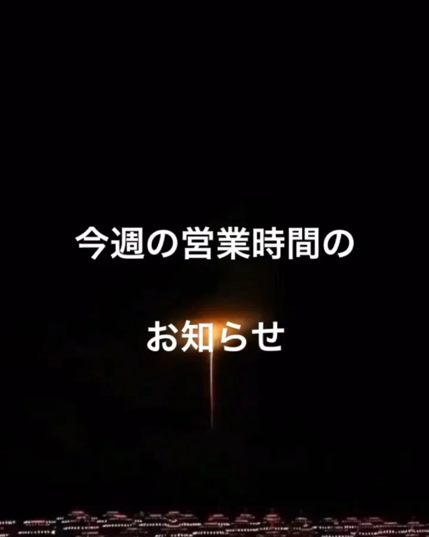
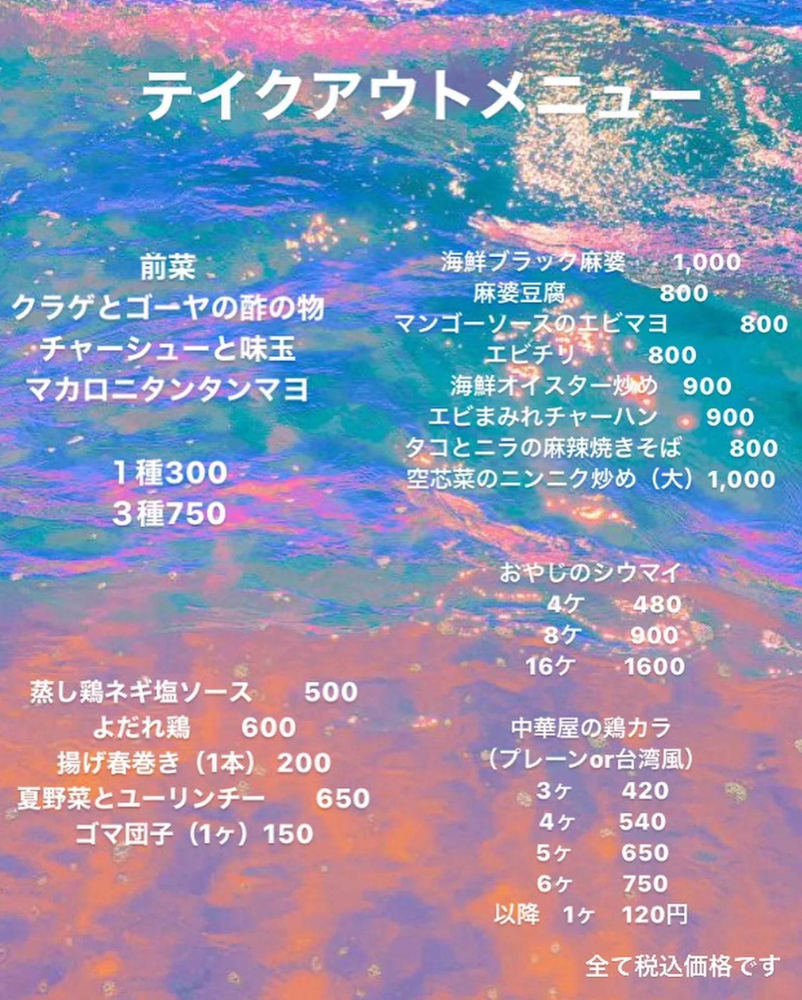

2021年8月23日
フジロックも終わり


フジロックも終わり 明日からゆったり営業をします！ 今週は ２４日（火） ２５日（水） ２７日（金） ２８日（土） イートイン 15:00〜19:30（LO） テイクアウト 15:00〜20:00（LO） でございます！ お待ちしております！ ＊アルコール類の提供はございません。 ＊仕入れ状況によりメニュー内容が変更する場合がございます。 イートインメニュー ●BLACK麻婆定食 1,000 ●麻婆定食 850 ●冷やし中華 900 定食にはご飯、スープ、 付け合わせが付きます。 ご飯お代わり自由です。 #中華バル#中華#中華料理#福島区グルメ#路地裏#B級グルメ#中国#チャイニーズ#路地裏チャイニーズ有馬#有馬#シュウマイ#餃子#点心#フォローミー#followme#パクチー#麻婆豆腐#花火#打ち上げ花火#最後の花火に今年もなったな #いや 花火してないな